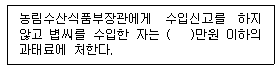

종자기사 (2010-03-07 기출문제)
1과목: 종자생산학
1. 종자의 수명에 미치는 영향력이 가장 낮은 것은?
- 온도
- 상대습도
- 종자내 수분함량
- 탄산가스
(정답률: 77%)

2. 겉씨식물에서 수정 후 종자의 핵상으로 옳은 것은?
- 종피: 2n, 배유: 3n, 배: 2n
- 종피: 3n, 배유: 3n, 배: 2n
- 종피: 2n, 배유: 2n, 배: 3n
- 종피: 2n, 배유: 1n, 배: 2n
(정답률: 61%)
3. 양배추의 채종재배에서 정상종자의 비율 및 발아율에 가장 크게 영향을 줄 수 있는 미량요소는?
- K
- P
- B
- Fe
(정답률: 46%)
4. 배 휴면을 하는 종자의 휴면타파에 가장 효과적인 방법은?
- 습윤 저온처리
- 습윤 고온처리
- 건조 저온처리
- 건조 고온처리
(정답률: 58%)
5. 양배추, 양파와 같이 수량과 품질이 개화, 추대로 열악화되는 작물에서 특히 주의를 요하는 퇴화는?
- 역도태에 의한 퇴화
- 돌연변이에 의한 퇴화
- 기회적 변동에 의한 퇴화
- 미동유전자의 분리에 의한 퇴화
(정답률: 66%)
6. 영양기관을 이용한 영양번식법을 실시하는 가장 큰 이유는?
- 종자가 크게 절약되기 때문에
- 일시에 번식이 가능하기 때문에
- 우량한 유전질의 영속적인 유지를 위하여
- 파종 또는 이식 작업이 편리하여 노동력이 절약되기 때문에
(정답률: 74%)
7. 종자의 발아에 관여하는 외적 조건은?
- 수분, 온도
- 유전자형, 수분
- 온도, 종자성숙도
- 종자성숙도, 유전자형
(정답률: 87%)
8. 종자의 구조조직 중 모체의 일부인 것은?
- 배
- 배젖
- 자엽
- 종피
(정답률: 48%)
9. 종자수분함량을 산출하는 방식으로 옳은 것은? (단, 식에서 M1은 측정시 사용한 용기의 중량, M2는 건조전의 용기와 내용물의 총중량, M3는 건조후의 용기와 내용물의 총중량을 나타낸다.)
- {(M2-M3)/(M2-M1)} X 100%
- {(M3-M2)/(M2-M1)} X 100%
- {(M2-M3)/(M3-M1)} X 100%
- {(M3-M2)/(M3-M1)} X 100%
(정답률: 58%)
10. 검사용 시료 추출 시 사용하는 균분기의 종류가 아닌 것은?
- 코니칼균분기
- 토양균분기
- 종자균분기
- 원심분리형균분기
(정답률: 35%)
11. 다음 중 저장 수명이 가장 짧은 종자는?
- 양파
- 배추
- 수박
- 토마토
(정답률: 68%)
12. 오이 세균성점무늬병의 방제를 위한 종자의 건열 처리에 알맞은 온도와 기간으로 가장 적합한 것은?
- 30~40℃에서 3~4일
- 50~60℃에서 3~4일
- 70~80℃에서 1~4일
- 100~120℃에서 2~3일
(정답률: 53%)
13. 지베렐린산 500ppm은 증류수 1L에 몇 g의 지베렐린산이 녹아있는 것인가?
- 0.0⑤g
- 0.⑤g
- 0.5g
- 5g
(정답률: 50%)
14. 종자소독 훈증제로 주로 사용되는 것은?
- 티오파네이트메틸.티람 수화제
- 알루미늄포스파이드 정제
- 프로클로라즈 유제
- 유황
(정답률: 50%)
15. 인위적으로 단위결과를 작성하는 방법이 아닌 것은?
- 꽃가루의 자극을 이용
- 생장조절물질의 이용
- 배수체의 이용
- 웅성불임성의 이용
(정답률: 43%)
16. 종자의 테트라졸리움 검정(TZ: tetrazolium test) 에 대한 설명으로 틀린 것은?
- 테트라졸리움 검정과 발아검사를 병행하면 휴면종자를 검사하는데 매우 효과적이다.
- 테트라졸리움 검사의 결과를 해석할 때 연조직 이나 상처, 해충의 피해부위도 유념해야 한다.
- 발아능을 빨리 검사할 수 있을 뿐 아니라 누구나 쉽게 평가할 수 있다는 것이 장점이다.
- 배세포분열부위의 위치를 알고 착색의 형태를 보아서 종자의 발아능을 해석해야 한다.
(정답률: 44%)
17. 우리나라 무, 배추의 채종지 조건으로써 중요도가 가장 낮은 것은?
- 겨울이 온화할 것
- 토양건조가 심하지 않을 것
- 봄이 길 것
- 태풍이 적을 것
(정답률: 22%)
18. 생리적 휴면타파 방법이 아닌 것은?
- 예냉
- 건조보관
- 산으로 상처내기
- 폴리에틸렌으로 싸서 봉하기
(정답률: 44%)
19. 발아검사에 대한 일반적인 규정과 방법으로 틀린 것은?
- 발아검사기간은 작물에 따라 다르며 종자발아 검사규정에 따른다.
- 발아율은 백분율로 나타내고, 소수점 이하는 반올림하여 정수로 나타낸다.
- 발아율의 반복간 차이가 허용 범위를 벗어날 경우 재검사를 실시해야 한다.
- 반복간 발아율 차이의 허용범위는 정해진 규정에 따라야 하며 재검사는 1차에 한정한다.
(정답률: 60%)
20. 자가 불화합성에 대한 설명으로 옳은 것은?
- 양파, 당근 등의 F1 채종에 이용된다.
- 다른 계통 또는 품종간 교배시 종자가 생기지 않는다.
- 식물의 암수생식기관이 형태나 기능상으로 정상이다.
- 자가불화합성인 모계와 웅성불임성인 부계를 혼식하여 F1을 채종한다.
(정답률: 41%)
2과목: 식물육종학
21. 인위적으로 반수체 식물을 만드는 조직배양 방법은?
- 배 배양
- 약 배양
- 생장점 배양
- 원형질체 배양
(정답률: 61%)
22. 작물의 진화과정에서 새로운 유전질의 변이가 생성되는 기작이 아닌 것은?
- 교배
- 배수체
- 돌연변이
- 환경변이
(정답률: 61%)
23. 이질배수체에 대한 설명으로 틀린 것은?
- 이질배수체는 비상동 게놈으로 구성되어 있다.
- 2배체를 콜히친(colchicine) 처리하면 이질 배수체가 된다.
- 이질배수체는 임성이 낮고 후대의 유전현상이 복잡하여 곤란한 점이 많다.
- 종속간교잡종은 이질배수체이다.
(정답률: 48%)
24. 계통육종의 육종과정 중 지역적응성 검정시험에서 적응성을 평가받게 될 계통은?
- 생산력검정 본 시험에서 표준품종보다 우수한 특성을 가진 것으로 평가된 품종
- 농가실증시험에서 현 재배품종과 비슷하나 특성을 가졌다고 평가된 계통
- 생산력검정 예비시험 1년차 평가에서 표준품종보다 우수하다고 평가된 계통
- 3세대동안 집단재배와 집단선발을 통해서 선발된 유전 분리중인 혼합계통
(정답률: 43%)
25. 복이배체(amphidiploid)의 게놈을 바르게 표현한 것은?
- AA
- AABB
- AB
- AAAA
(정답률: 63%)
26. 광주율의 이용에 관한 설명으로 틀린 것은?
- 단일식물에서는 단일처리로 장일식물은 장일처리로 개화가 촉진된다.
- 단일 식물에서는 1일 중 8시간 내외만 일광을 조사하고 어두운 곳에 두어 개화를 촉진시킨다
- 단일 식물에서는 장일처리로 개화를 억제 시킨다.
- 장일 식물에서는 야간조파(night break)로 개화를 억제 시킨다.
(정답률: 54%)
27. 온대지방이 원산인 단일성 작물을 열대지방에 재배했을 때, 온대지방에 재배했을 때와 비교하여 개화기는 어떻게 변화하는가?
- 열대지방의 저지대에서는 일찍 개화하고 고지대에서는 늦게 개화한다.
- 일반적으로 고도와는 관계없이 일찍 개화한다.
- 일반적으로 고도와는 관계없이 늦게 개화한다.
- 일반적인 경향이 없다.
(정답률: 23%)
28. 일대잡종 품종의 종자생간에 효과적으로 사용하고 있는 것은?
- 아트라진 저항성
- 기본영양 생장성
- 웅성불임성
- 삼염색체성(trisomics)
(정답률: 67%)
29. 무, 배추, 시금치의 품종특성을 유지하기 위해 필요한 최소 격리거리는?
- 5m
- 200m
- 500m
- 1,000m
(정답률: 59%)
30. 품종에 대한 설명으로 틀린 것은?
- 1대 잡종도 품종이 될 수 있다.
- 재배 이용상 동일한 특성을 갖는다.
- 유전적으로 항상 호모(homo)이어야 한다.
- 실용상 지장이 없는 정도의 균등성 및 영속성을 지녀야 한다.
(정답률: 62%)
31. 타가수정을 하는 재래종 품종의 계통집단 선발 과정의 순서로 옳은 것은?
- 개체선발→ 선발계체의 계통재배→ 선발된 우량계통의 혼합채종
- 우량 계통혼합→ 계통선발→ 개체선발
- 개체선발→ 선발된 우량 개체혼합→ 계통선발
- 개체선발→ 증식→계통선발
(정답률: 48%)
32. 신품종의 특성이 퇴화되어서 나타나는 피해를 막기위하여 농민들이 할 수 있는 가장 좋은 방법은?
- 종자갱신
- 돌연변이
- 역도태
- 자연교잡
(정답률: 61%)
33. 환경적응성을 검정하는 방법으로 가장 적합한 것은?
- 가장 적당한곳에서 4반복으로 생산력을 검정함
- 여러 가지 균주에 대한 진성저항성을 검정함
- 전국의 여러 지역에서 생산력을 검정함
- 유전자의 연관관계를 분석함
(정답률: 38%)
34. 변이중 유전하지 않는 변이는?
- 아조변이
- 교배변이
- 장소변이
- 돌연변이
(정답률: 70%)
35. 잡종강세 현상을 이용하는 육종의 대상작물에 대한 설명으로 옳은 것은?
- 근교약세 작물에만 유용하다.
- 타식성 작물에만 이용할 수 있다.
- 자식성 작물에 이용할 수 있다.
- 영양번식 작물에 가장 유리하다.
(정답률: 35%)
36. 집단육종법(bulk method)에서 개체 선발을 F5~F6에서 하는 근본 이유로 가장 적합한 것은?
- 개체의 동형접합도(homozygosity)가 충분히 높아진 후에 선발하기 위해
- 계통의 동질성(homogeneity)이 충분히 높아진 후에 선발하기 위해
- 잡종강세현상이 강하게 나타난 후에 선발하기 위해
- 자식열세현상이 더 이상 나타나지 않을 때 선발하기 위해
(정답률: 36%)
37. Apomixis를 바르게 설명한 것은?
- 종자 없이 과일이 생기는 현상
- 수정 없이 종자가 생기는 현상
- 체세포에 일어나는 돌연변이
- 염색체가 배가 되는 현상
(정답률: 64%)
38. 유전변이 집단에서 양적형질에 대하여 선발할 때 원집단의 평균치와 선발한 개체들의 평균치 간차이를 선발차(i)라 하고, 선발 개체로부터 얻은 후대 집단의 평균치와 원집단평균치의 차이를 유전적 획득량 (∆G) 이라 한다. 원집단의 평균치가 25, 선발한 개체들의 평균치가 31, 선발 개체로부터 얻은 후대 집단의 평균치가 29일 때 이 형질의 유전력은? (단, 유전력 h2=∆G/i)
- 3.000
- 1.240
- 1.160
- 0.667
(정답률: 42%)
39. 양성잡종(AaBb)을 aabb에 여교잡 하였을 때 나타나는 AaBb, Aabb, aaBb, aabb의 분리비율은? (단, A와 B는 독립유전한다.)
- 15 : 2 : 1 : 1
- 9 : 3 : 3 : 1
- 5 : 1 : 2 : 1
- 1 : 1 : 1 : 1
(정답률: 36%)
40. 자가수정 작물에서 두 유전자가 연관되어 있을 때 각 분리세대에서 나타나는 새로운 고정형 조합(homozygous plant)의 빈도는 독립유전을 하는 경우와 비교하면 어떻게 되겠는가?
- 독립 유전의 경우보다 높다.
- 독립유전의 경우보다 낮다.
- 독립유전의 경우와 비교할 수 없다.
- 두 유전자 간의 교차율에 따라 높을 수도 있고 낮을 수도 있다.
(정답률: 29%)
3과목: 재배원론
41. 결핍되면 분열조직에 갑자기 괴사를 일으키기 쉬우며 결핍증상이 저장기관에 잘 나타나는 무기성분은?
- 붕소
- 마그네슘
- 칼슙
- 염소
(정답률: 52%)
42. 호광성 종자는?
- 토마토
- 가지
- 상추
- 호박
(정답률: 56%)
43. 논에 암모니아태질소를 시용하여 질화작용이 발생하는 경우에 대한 설명으로 옳은 것은?
- 탈질작용과는 관계가 없다.
- 암모니아화성균에 의해서 일어난다.
- 질산태질소는 교양교질에 흡착되지 않는다.
- 암모니아태질소는 환원층에 시용시 일어난다.
(정답률: 34%)
44. 수분당량과 비슷한 함수량은?
- 최대용수량
- 흡습계수
- 영구위조점
- 포장용수랑
(정답률: 35%)
45. 맥류의 수발아를 억제하기 위한 발아억제제의 최적 살포시기는?
- 출수 후 7일 경 종피가 굳어지기 전
- 출수 후 20일 경 종피가 굳어지기 전
- 출수 후 30일 경 종피가 굳어진 후
- 출수 후 60일 경 종피가 굳어진 후
(정답률: 23%)
46. 식물체 내의 수분퍼텐셜에 대한 설명으로 틀린 것은?
- 식물체 내의 수분퍼텐셜은 토양의 수분퍼텐셜보다 높다.
- 수분퍼텐셜과 삼투퍼텐셜이 같으면 압력퍼텐셜이 0(zero)이 되므로 원형질 분리가 일어난다.
- 압력퍼텐셜과 삼투퍼텐셜이 같으면 세포의 수분퍼텐셜이 0(zero)이 되므로 팽만상태가 된다
- 세포의 부피와 압력퍼텐셜이 변화함에 따라 삼투퍼텐셜과 수분퍼텐셜이 변화한다.
(정답률: 38%)
47. 농업의 특징에 대한 설명으로 틀린 것은?
- 농업 노동은 분업이 곤란하다.
- 공산물에 비하여 수요의 탄력성이 크다.
- 공산물은 가격에 대한 수급의 적응성이 적다.
- 농업 생산의 토지는 수확체감의 법칙이 적용된다.
(정답률: 46%)
48. 답전윤환의 효과가 아닌 것은?
- 가축영양상의 효과
- 벼의 수량증가
- 잡초의 감소
- 기지회피
(정답률: 62%)
49. 연작의 해가 가장 적은 작물로만 나열된 것은?
- 시금치, 콩, 인삼
- 벼, 옥수수, 조
- 수박, 고추, 완두
- 콩, 강낭콩, 아마
(정답률: 55%)
50. 수해에 관여하는 요인에 대한 설명으로 옳은 것은?
- 탁수가 청수보다 피해가 덜하다.
- 벼는 생육초기가 침수에 가장 약하다.
- 화본과 작물보다 콩과작물이 침수에 강하다.
- 수온이 낮은 것이 호흡기질의 소모가 적어 피해가 적다.
(정답률: 37%)
51. 작물의 적산온도에 대한 설명으로 가장 적합한 것은?
- 발아로부터 성숙까지의 0℃ 이상의 일평균 기온의 합산이다.
- 육묘로부터 개화까지의 일평균기온의 합산이다
- 발아로부터 성숙까지의 일최고기온의 합산이다
- 정식부터 개화까지의 0℃ 이상의 일평균기온의 합산이다.
(정답률: 60%)
52. 질산환원효소의 구성성분으로 콩과작물의 질소 고정에 필요한 무기성분은?
- 몰리브덴
- 철
- 마그네슘
- 규소
(정답률: 44%)
53. 겨울철 맥류와 유채의 동사온도(frost killing temperature) 범위로 가장 적합한 것은?
- 0.0~2.0℃
- -0.1~ 1.0℃
- -5.0~ -1.0℃
- -17.0~ -15.0℃
(정답률: 23%)
54. 무배유종자에 해당하는 작물로만 이루어진 것은?
- 콩, 팥, 녹두
- 콩, 옥수수, 벼
- 옥수수, 벼, 보리
- 밭, 녹두, 보리
(정답률: 64%)
55. 작물의 내동성을 증대시키는 조건이 아닌 것은?
- 전분의 함량이 많을 때
- 원형질의 점도가 낮을 때
- 친수성 콜로이드가 많을 때
- 세포내 칼슘이온 함량이 많을 때
(정답률: 31%)
56. 답리작 맥류재배에서 특히 요구되는 품종의 특성은?
- 내병성
- 내비성
- 내습성
- 내충성
(정답률: 43%)
57. 발아율이 90%, 순도가 90%인 종자의 용가(순환 종자)는?
- 1%
- 81%
- 90%
- 100%
(정답률: 44%)
58. 작물의 재배환경에 따른 T/R 율의 변화로 옳은 것은?
- 일사량이 적으면 T/R 율이 증대한다.
- 토양수분이 적으면 T/R 율이 증대한다.
- 질소 사용량이 많으면 T/R율이 감소한다.
- 토양통기가 불량하면 T/R율이 감소한다.
(정답률: 35%)
59. 감자 괴경의 형성 및 비대는 지표 밑 몇 cm 부위에서 가장 잘 이루어지는가?
- 10cm 부위
- 20cm 부위
- 40cm 부위
- 60cm 부위
(정답률: 22%)
60. 광보상점에 대한 설명으로 옳은 것은?
- 음생식물 및 양생식물에 무관하다.
- 음생식물과 양생식물의 광보상점은 동일하다.
- 음생식물에 비해 양생식물의 광보상점은 낮다.
- 음생식물에 비해 양생식물의 광보상점은 높다.
(정답률: 32%)
4과목: 식물보호학
61. 복숭아순나방이 사과를 가해하는 경제적 가해 수준 밀도(Economic injury level: EIL)을 산출하려 한다. 과수원 1000m2에 가해하는 이 해충을 방제하기위해 SS기 임차료 40,000원, 인건비 50,000원, 농약 10,000원을 각각 지불하였다. 이 해충의 마리당 0.08kg을 생산량 피해로 보고, 출고 당시의 사과 판매가격이 20kg 단위당 25,000원이라고 가정할 때 EIL은?
- 0.5 마리/m2
- 1.0 마리/m2
- 1.5 마리/m2
- 2.0 마리/m2
(정답률: 27%)
62. 곤충의 피해에 대한 설명으로 옳은 것은?
- 흡즙피해를 주는 것에는 나비류, 벌류가 있다.
- 저작(chewing) 피해를 주는 것에는 풍뎅이, 진딧물, 매미충이 있다.
- 혹을 만들어 피해를 주는 해충으로는 벼줄기굴파리가 있다.
- 벼 오갈병은 번개매미충과 끝동매미충에 의하여 옮겨진다.
(정답률: 45%)
63. 작물 살충제로서 약제 처리지점과 해충 가해 지점이 달라도 방제가 되는 살충제는?
- 접촉제
- 식독제
- 침투성살충제
- 전착제
(정답률: 43%)
64. 기주식물이 병에 감염되어도 병징이 심하게 나타 나지 않으며, 병징이 나타나도 수량에 큰 영향을 미치지 않는 성질은?
- 침입저항성
- 감수성
- 면역성
- 내병성
(정답률: 25%)
65. 병균이 종자의 표면에 그치지 않고 종자의 배에 감염하여 종자전염하는 병균은?
- 보리 속깜부기병균
- 벼 도열병균
- 벼 깨씨무늬병균
- 보리 겉깜부기병균
(정답률: 26%)
66. 강피, 너도방동사니, 올미가 주로 발생하는 곳은?
- 밭
- 논
- 잔디밭
- 과수원
(정답률: 58%)
67. 수분부족으로 인하여 작물에 유발되는 기상재해는?
- 동해(凍害)
- 수해(水害)
- 한해(旱害)
- 설해(雪害)
(정답률: 54%)
68. Phytoplasma에 대한 설명으로 옳은 것은?
- 세포벽을 가지고 있다.
- 주로 곤충에 의하여 매개된다.
- 바이러스보다 크기가 훨씬 작다.
- 곰팡이와 세균의 중간적 성질을 갖는다.
(정답률: 35%)
69. 속간선택성 제초제인 프로파닐 유제가 벼에는 피해 없이 피를 고사시키는 이유는?
- 페녹시(phenoxy)계 제초제로서 피에만 작용이 강하기 때문에
- 벼는 프로파닐 성분을 분해하는 시마진 (simazine)성분을 가지고 있기 때문에
- 벼는 프로파닐 성분을 분해하는 아실아릴아미 다아제(acylarylamidase)를 가지고 있기때문에
- 벼는 프로파닐 성분을 분해하는 포스페이트(phosphate) 성분을 가지고 있기 때문에
(정답률: 35%)
70. 토양서식균이 아니므로 순수하게 토양 내 월동이 불가능한 병원균은?
- 노균병균
- 모잘록병균
- 세균성 무름병균
- 잎집무늬마름병균
(정답률: 20%)
71. 생물성 병원체에 의한 농작물의 피해와 거리가 먼 것은? (단, 재배 중에 발생하는 농작물의 피해)
- 파이토플라스마에 의한 피해
- 식물체내 대사산물에 의한 피해
- 진균과 점균에 의한 피해
- 기생성 종자식물에 의한 피해
(정답률: 64%)
72. 분제가 갖추어야 할 물리적 성질과 거리가 먼 것은?
- 토분성
- 현수성
- 분산성
- 비산성
(정답률: 44%)
73. 번데기 기간을 거치나 불완전변태를 하고, 입틀이 좌우 비상칭(asymmetry)인 것은?
- 톡톡히목
- 총채벌레목
- 강도래목
- 매미목
(정답률: 19%)
74. 환경에 잔류 가능성은 있으나 살초작용이 빠르고 일정한 지역에 간편하게 처리 할 수 있는 장점을 가진 방제법은?
- 경종적방제법
- 생물적 방제법
- 화학적 방제법
- 예방적 방제법
(정답률: 74%)
75. 진딧물의 피해 및 피해증상으로 보기 어려운 것은?
- 식물 바이러스병을 매개한다.
- 새로 나오는 잎이나 줄기가 기형으로 오그라든다.
- 콩 잎에는 노란색의 반점을 형성하고 위축잎을 만들기도 한다.
- 과실을 흡즙하여 속을 스폰지 상태 또는 기형으로 만든다.
(정답률: 29%)
76. 잡초의 생육특성에 해당하는 것은?
- 발아가 느리다.
- 대부분 C3 식물이다.
- 초기생육이 빠르다.
- 밀도가 낮으면 결실률이 낮다.
(정답률: 60%)
77. 페로몬을 이용한 해충 방제기술을 잘못 설명한 것은?
- 집합페로몬의 경우 집단 유살을 꾀할 수 있다.
- 교미교란을 통해 암컷 불임을 유발시킬수 있다
- 특정 해충의 발생을 모니터링해서 약제 방제적기를 알 수 있다.
- 이종간의 교신물질로서 천적을 유인하여 해충 방제효과를 높이게 된다.
(정답률: 48%)
78. 기생성 종자식물에 대한 설명으로 틀린 것은?
- 대다수 쌍떡잎식물이다.
- 꽃과 종자를 형성하며 다양한 기주범위를 가진다.
- 균핵이라는 특이한 구조를 형성하여 수분과 양분을 흡수한다.
- 정상적인 뿌리조직을 가지고 있지 않거나 퇴화한 뿌리를 가지고 있다.
(정답률: 47%)
79. 벼 도열병 전문 약제는?
- 트리사이클라졸 수화제
- 네오아소진 액제
- 메탈락실 수화제
- 페노뷰카브 유제
(정답률: 48%)
80. 전염성 병원에 속하는 것은?
- 기상
- 바이러스
- 토양
- 농약
(정답률: 44%)
5과목: 종자관련법규
81. 종자 작물은 다른 꽃가루 및 종자전염병(종자바이러스 감염 및 질병의 원인이 될수 있는 야생식물포함)의 모든 원천으로부터 격리되어야 한다. 고추 채종포에서의 격리거리는 얼마 이상이어야 하는가?
- 300m
- 500m
- 1000m
- 1500m
(정답률: 50%)
82. 종자산업법상 품종보호출원서 작성 및 모든 서류는 한글로 작성하여야 하며 한자 및 외국문자의 표기가 필요한 경우 괄호 안에 이를 표기하여야 한다. 다음 중 영어로 표기할 수 있는 경우가 아닌 것은?
- 학명인 경우
- 전문용어로서 한글로 병행 표기가 가능한 경우
- 품종명칭인 경우
- 외국인의 성명 및 법인의 명칭인 경우
(정답률: 57%)
83. 농림수산식품부장관은 일반인들에게 품종보호출원서류 및 그 첨부된 물건에 대해 열람시 몇 일간 제공해야 하는가?
- 출원공고가 있는 날부터 30일
- 출원공고가 있는 날부터 40일
- 출원공고가 있는 날부터 50일
- 출원공고가 있는 날부터 60일
(정답률: 36%)
84. 국가품종목록 등재신청품종 성능검사기준으로 맞는 것은?
- 재배시험기간은 연속하여 3년 이상 하는 것을 원칙으로 한다.
- 재배시험 지역은 최소한 2개 지역 이상으로한다.
- 심사는 서류심사와 재배심사를 반듯이 동시에 거쳐야 한다.
- 형질의 발현이 안정적이고, 국내에 잘 알려진 품종으로서 국가품종목록에 등재된 품종이어야한다.
(정답률: 22%)
85. 보호품종의 종자를 증식, 생산, 조제, 양도, 대여, 수출 또는 수입하거나 양도 또는 대여의 청약을 하는 행위를 법적으로 무엇이라 하는가?
- 집행
- 실시
- 실행
- 성능
(정답률: 60%)
86. 품종목록에 등재한 경우 공보에 게재할 내용이 아닌 것은?
- 품종육성과정의 설명
- 품종의 성능 및 시험성적
- 재배 상 유의사항
- 재배적응지역
(정답률: 16%)
87. 감자 포장검사시 5개 조사구에서 2000 포기의 표본을 조사하였더니 모자이크바이러스 2주, 둘레 썩음병 4주, 흑지병 6주, 역병 4주가 조사되었다. 이때 감자 특정병의 비율은?
- 0.1%
- 0.3%
- 0.4%
- 0.6%
(정답률: 19%)
88. 다음 중 종자 보증표시에 관한 설명 중 틀린 것은?
- 원원종의 바탕색은 흰색으로, 대각선은 보라색으로, 글씨는 검정색으로 표시한다.
- 원종의 바탕색은 흰색으로, 글씨는 검정색으로 표시한다.
- 보증종자의 바탕색은 청색으로, 글씨는 검정색으로 표시한다.
- 보급종(I)의 바탕색은 적색으로, 글씨는 검정색으로 표시한다.
(정답률: 38%)
89. 동일 품종에 대하여 같은 날에 2인의 품종보호출원 이 있을 경우에 처리방법으로 올바른 것은?
- 시간적으로 빠른 접수자만이 품종보호를 받을 수 있다.
- 당사자 간의 협의에 의하여 정하여진 자만이 품종보호를 받을 수 있다.
- 양자 모두 품종보호를 받을 수 없다.
- 해당부서에서 품종보호출원인의 권리를 똑같이 양분하여 인정한다.
(정답률: 48%)
90. 영업정지를 받고도 종자업을 계속 영위한 자에게 해당되는 벌칙은?
- 1년 이하의 징역 또는 1천만원 이하의 벌금
- 2년 이하의 징역 또는 2천만원 이하의 벌금
- 3년 이하의 징역 또는 3천만원 이하의 벌금
- 4년 이하의 징역 또는 4천만원 이하의 벌금
(정답률: 62%)
91. 다음 ( )안에 알맞은 것은?

- 200
- 300
- 400
- 500
(정답률: 44%)
92. 종자산업법상 보증된 감자 종서를 보급하고자 할 때 보증 이후의 관리에 관한 설명으로 틀린 것은?
- 보증종자에 대해 사후 관리시험을 실시하였다.
- 보증표시를 하지 않아 보증의 효력이 발생하지 않았다.
- 종자관리사의 감독하에 분포장하고 표시내용도 달리하여 보증표시를 하였다.
- 보증의 유효기간이 경과하여 유통된 종서를 다시 회수하였다.
(정답률: 40%)
93. 국가품종목록의 등재 재배심사 연간 수수료는? (단, 품종보호출원과 국가품종목록의 등재신청을 같이 하는 경우이다.)
- 품종당 1만원
- 품종당 2만원
- 품종당 5만원
- 품종당 10만원
(정답률: 29%)
94. 품종의 본질적인 특성이 반복적으로 증식된 후에도 그 품종의 본질적인 특성이 변하지 아니하는 경우에는 해당 품종은 무엇을 갖춘 것으로 보는가?
- 안정성
- 균일성
- 구별성
- 신규성
(정답률: 47%)
95. 품종목록 등재의 유효기간연장신청은 그 품종목록 등재의 유효기간 만료전 얼마 이내에 신청하여야 하는가?
- 30일
- 60일
- 180일
- 1년
(정답률: 46%)
96. 다음 품종명칭 중 종자산업법에 의한 품종명칭의 등록을 받을 수 있는 경우는?
- 무:♂♀♂♀
- 보리: 만키로
- 상추: 쌈
- 참외: T150
(정답률: 21%)
97. 종자산업법 시행규칙상의 보증 유효기간으로 적합한 것은?
- 무, 배추 : 2년
- 느타리버섯 : 6개월
- 감자, 고구마 : 3개월
- 티모시, 톨페스큐 : 3년
(정답률: 46%)
98. 종자산업법상 “종자”에 대한 정의로 옳은 것은?
- 증식용 또는 재배용으로 쓰이는 모든 씨앗을 말한다.
- 재배용으로 쓰이는 씨앗 또는 영양체만을 말한다.
- 증식용으로 쓰이는 씨앗 또는 버섯종균 만을 말한다.
- 증식용 또는 재배용으로 쓰이는 씨앗, 버섯 종균 또는 영양체를 말한다.
(정답률: 74%)
99. 종자업을 등록하고자 하는 자는 대통령령이 정하는 시설을 갖추어 누구에게 등록하여야 하는가?
- 시장, 군수, 구청장
- 시,도지사
- 농촌진흥청장
- 농림수산식품부장관
(정답률: 30%)
100. 국가보증 또는 자체보증의 대상이 아닌 종자를 포장에 품질표시를 하여 판매하고자 한다. 품질 표시 사항이 아닌 것은?
- 종자의 생산년도
- 종자의 생산지
- 품종의 명칭
- 종자의 발아율
(정답률: 45%)